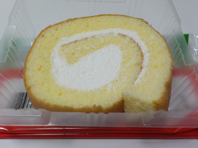
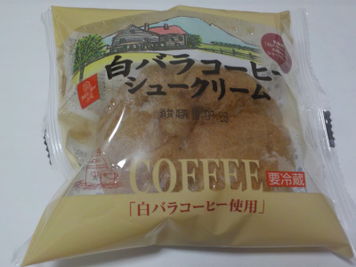
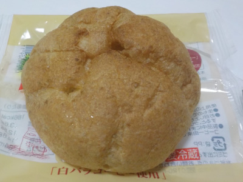
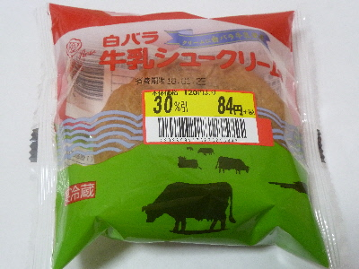
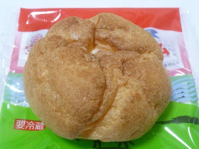

大山乳業の白バラ牛乳ロール
2021/01/04

甘いものを食べたいと思いロールケーキを買いました。
大山乳業の白バラ牛乳ロールです。
牛乳を売りにしているせいか、クリームの甘さは控えめでした。
その代わりか、スポンジは甘く美味しかったです。
鳥取県東伯郡琴浦町大字保37-1
2021/01/04

甘いものを食べたいと思いロールケーキを買いました。
大山乳業の白バラ牛乳ロールです。
牛乳を売りにしているせいか、クリームの甘さは控えめでした。
その代わりか、スポンジは甘く美味しかったです。
2018/09/27
コーヒーミルク味のシュークリームです。
コーヒー牛乳って名前はもう使っちゃいけないんですよね。


想像通りの味なんですが、実際食べると忠実にコーヒーミルクの味がして「そのままだ。凄い！」って思いました。
コーヒー味はカスタード味よりもずいぶん軽いなーって思いながら食べました。
2018/01
大山乳業の白バラ牛乳シュークリームが安くなっていたので買いました。
ゆめタウンで安くなっていました。

100円切るとなんだか買いやすいです。

牛乳シュークリームってあまりないですよね。
最近はカスタードとかの甘い系のシュームリームが多い気がしますが、これはあっさりめで食べやすいなって思いました。
あっさりだけどそこそこボリュームはあるので、甘いお菓子を楽しめました。
バニラとかタマゴじゃなくて、牛乳感があるクリームもいいもんですね。
大きな会社ですね。